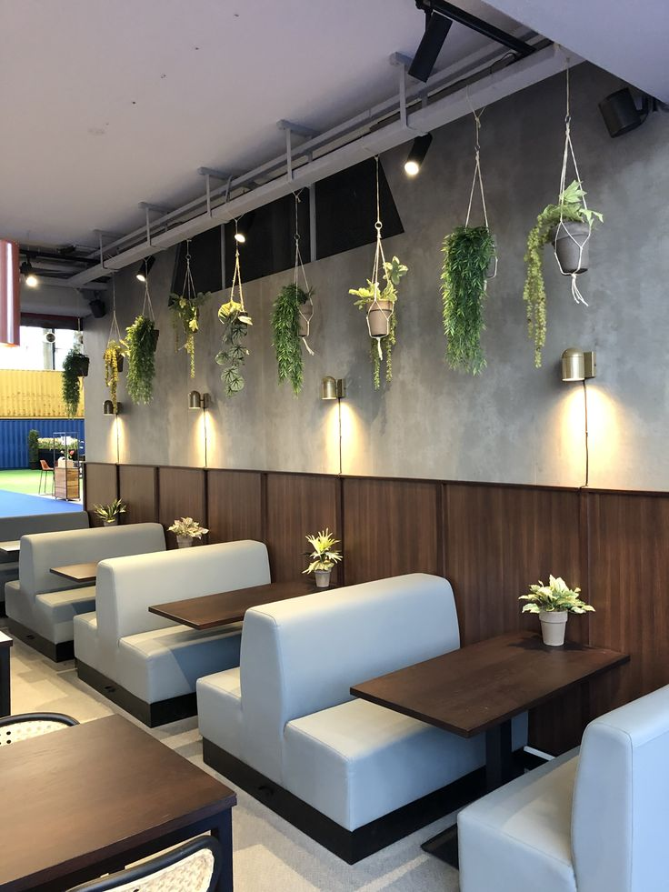

Fresh meals
Meals prepared with care and served fresh.
GOOD FOOD • GOOD MOMENTS
Freshly prepared favourites, warm hospitality and a place to enjoy every bite.
A PLACE TO FEEL AT HOME
Join us for a relaxed meal with family and friends. From local favourites to tasty everyday classics, we make every visit special.
See what’s cooking →
A LITTLE TASTE
Take a look at the atmosphere and enjoy a little food inspiration.


Video is embedded from YouTube. An internet connection is required to view it.
WHY VISIT US?
Meals prepared with care and served fresh.
A welcoming place for individuals, friends and families.
Enjoy good food and good company.